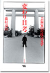

|
|
|
|
2005'09 ここでご紹介した本はいずれも最寄りの書店、または当ホームページ「ご購入について」の中のオンライン書店等経由でお求めいただけます。 |
『ゲストハウスに住もう！』の今一生さん、深夜テレビでゲストハウスの魅力を徹底紹介！ 10月10日の深夜テレビ番組『先端研』で、ゲストハウスの特集をします。今一生さんの出演はもちろん、業者・入居者の生の声がきける貴重な機会になるかも!? |
ロカルノ国際映画祭で映画『Little Birds イラク戦火の家族たち』が人権賞を受賞(最優秀賞) ！ 『Little Birds イラク戦火の家族たち』がロカルノ国際映画祭の人権部門(Human RIghts)にて上映され、8月13日に人権部門の中で最優秀賞にあたる人権賞(Human Rights Award)を受賞されました。 |
『リトルバーズ 戦火のバグダッドから』の綿井健陽氏2005年《JCJ大賞》受賞！ 日本ジャーナリスト会議（JCJ）は、1958年以来、年間のすぐれたジャーナリズム活動･作品に賞を贈り、顕彰してきました。今年は48回目にあたります。 選考委員は次の方々伊藤洋子（東海大学教授）、大谷昭宏（ジャーナリスト）、清田義昭（出版ニュース社代表）、 柴田鐵治（国際基督教大学教授）、中村梧郎（フォトジャーナリスト） ●公式ホームページ http://www.littlebirds.net |
『しあわせのねだん』の角田光代さん、あの人気テレビ番組に登場！ 笑えてためになる人気番組『爆笑問題のススメ』に、ついに角田光代さんがゲストで登場します。 |
9/17sat→10/16sun Story over Me/M's self-portraits MORIMURA YASUMASA 晶文社では『女優家M 演技の花道』『「変わり目」考』でおなじみの森村泰昌氏。約5年の年月をかけて撮りためられた秘蔵モノクロ写真≪Mシリーズ≫93点を一挙公開。森村泰昌氏が往年の大女優マリリン･モンローやオードリー･ヘップバーンに扮した写真がある一方で、元になったイメージにはこだわらずに森村氏オリジナルのセンスで演じた人物の写真など様々な写真作品から、めくるめく森村泰昌氏の世界がご覧いただけます。
□9月18日（日）午後2時〜 森村泰昌×佐藤守弘 トークショー開催決定!! |
渋谷の古書店フライング・ブックスが本になりました！ 「Flying Booksは文学的なロックンロール・ラウンジであり、今の日本の若者たちが創り上げようとしているNEW CULTUREの中心的空間だ!」
|
|||
『淋しいのはお前だけじゃな』著者枡野浩一さんトークショウのご案内 □正岡豊×枡野浩一トーク「いまきみが入れた真水のコップに話す（大阪で）」 |
好評連載中の小野博さん、写真集刊行！ 13人の写真家が、EU全25カ国を撮りおろした写真集シリーズ「In-between」全14巻が、2005年6月から、有限会社オシリスより販売されます。当ホームページで好評連載の小野博さんの写真集は、7月10日の発売です。 主催・発行：EU・ジャパンフェスト日本委員会 販売に関する問い合わせ：有限会社オシリス |
||
朝日カルチャーセンター公開講座に注目！ |
信田さよ子さん講演スケジュール 「新・愛と執着のはざま」を好評連載の信田さよ子さんが、日本各地で講演会を行います。詳細は以下のとおりです。 家族関係のカウンセリング 摂食障害とライフサイクルの危機 女性に対する暴力をなくす運動週間 |
『「心」と戦争』『平和と平等をあきらめない』が好評の高橋哲哉さんの講演会ご案内です。 『ルート181 イスラエル〜パレスチナ 旅の断章』 教育基本法を守り生かす県民のつどい 芦屋「九条の会」講演会 憲法集会 教育基本法･憲法の改悪をとめよう！10･15えひめ大集会 |
明川哲也さん出演の『爆笑問題のススメ』がDVDに! 毎回多彩な作家ゲストを迎えるテレビのトークバラエティーがDVDになりました。「作家の目線V.S爆笑問題の目線」で熱く切り込んでいきます。核心は突いてはいても涙を飲んでカットせざるを得なかった未放送シーンを、ふんだんに収録。番組を見ていない人はもちろん、見た人にも新たなサプライズが待っています! 弊社刊『メキシコ人はなぜハゲないし、死なないのか』も好評の明川哲也さん(TETSUYA）も登場します。 「爆笑問題のススメVol.2 実はこんなトーク、カットしてました 日本を代表する裏・文化人 編」 収録作家（順不同）: 発売:2004年12月22日 |
|
本に掲載された村木与四郎さん、忍さんのスケッチの一部を、複製して販売します。
村木与四郎さんのサイン入りで、A3サイズの複製画を額装したものを４点、各100枚の限定販売。さらに、ポストカードを12枚1組で好評販売中。
|
植草甚一自伝（復刻版） 植草甚一 1470円 植草甚一の研究（復刻版） 植草甚一 1470円 アメリカン･コミックス大全 小野耕世 予価2600円 霞が関の正体 稲葉清毅 予価2500円 「健康によい」とはどういうことか ーーナラエビ医学講座 斎藤清二 1600円 緑の島 スリランカのアーユルヴェーダ 岩瀬幸代 1900円 |
| 平和と平等をあきらめない 高橋哲哉・斎藤貴男／7刷一四七〇円 たましいの場所 早川義夫／3刷一七八五円 |